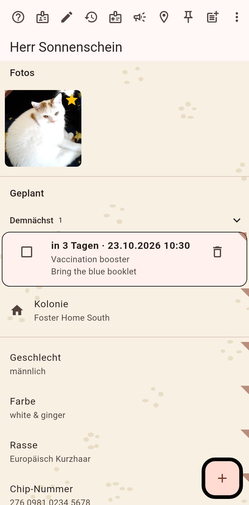

Alles zu einer Katze: Fotos, Felder, Familie, was geplant ist und ihre Historie. Die Seite ist nur zum Lesen, bis du den Stift antippst.

Zuerst die Fotos, der Stern auf dem Profilbild. Dann, was für die Katze geplant ist, und die Kolonie, in der sie lebt, dann die Felder mit ihren aktuellen Werten. Ein langer Druck auf ein Feld springt in seine Bearbeitung; ein langer Druck auf ein Foto öffnet sein Menü: Profilbild, zuschneiden, markieren, teilen, entfernen. Die Uhr an einem Feld öffnet seinen Verlauf, der Verlauf einer Zahl ist ein Diagramm.
Der Stift schaltet das Bearbeiten ein: jedes Feld bekommt seinen Editor, ein neues Feld wird unten angelegt, der Name ändert sich mit einem Tipp auf den Titel. Privat setzt du im Editor eines Feldes; ein privater Wert bleibt auf diesem Gerät, wenn ein Teilen nichts anderes sagt. Siehe Eine Katze wiegen für einen Messwert.
Hilfe, die Karte, der Stift, die Zeitleiste, der Tierarztbericht, das Vermisst-Plakat, dann so weit sie passen: in einen anderen Katalog verschieben, hier gesehen, Aushang hängt hier, Aushang hinzufügen, öffentlich teilen, verstecken, zusammenführen, löschen. Der Rest steckt im ⋮; dreh das Telefon, und das Menü leert sich.